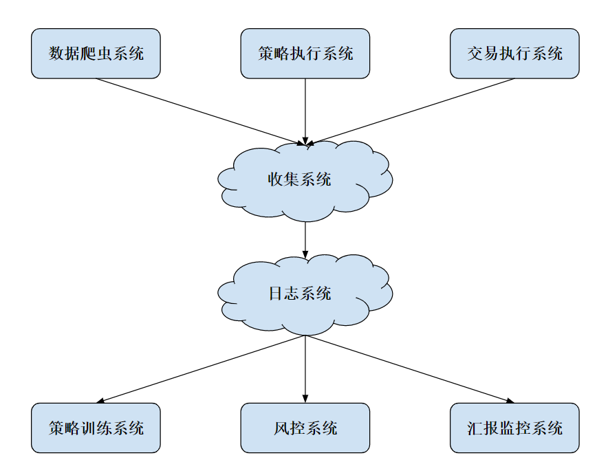

- 00 开篇词 从工程的角度深入理解Python.md.html
- 01 如何逐步突破，成为Python高手？.md.html
- 02 Jupyter Notebook为什么是现代Python的必学技术？.md.html
- 03 列表和元组，到底用哪一个？.md.html
- 04 字典、集合，你真的了解吗？.md.html
- 05 深入浅出字符串.md.html
- 06 Python “黑箱”：输入与输出.md.html
- 07 修炼基本功：条件与循环.md.html
- 08 异常处理：如何提高程序的稳定性？.md.html
- 09 不可或缺的自定义函数.md.html
- 10 简约不简单的匿名函数.md.html
- 11 面向对象（上）：从生活中的类比说起.md.html
- 12 面向对象（下）：如何实现一个搜索引擎？.md.html
- 13 搭建积木：Python 模块化.md.html
- 14 答疑（一）：列表和元组的内部实现是怎样的？.md.html
- 15 Python对象的比较、拷贝.md.html
- 16 值传递，引用传递or其他，Python里参数是如何传递的？.md.html
- 17 强大的装饰器.md.html
- 18 metaclass，是潘多拉魔盒还是阿拉丁神灯？.md.html
- 19 深入理解迭代器和生成器.md.html
- 20 揭秘 Python 协程.md.html
- 21 Python并发编程之Futures.md.html
- 22 并发编程之Asyncio.md.html
- 23 你真的懂Python GIL（全局解释器锁）吗？.md.html
- 24 带你解析 Python 垃圾回收机制.md.html
- 25 答疑（二）：GIL与多线程是什么关系呢？.md.html
- 26 活都来不及干了，还有空注意代码风格？！.md.html
- 27 学会合理分解代码，提高代码可读性.md.html
- 28 如何合理利用assert？.md.html
- 29 巧用上下文管理器和With语句精简代码.md.html
- 30 真的有必要写单元测试吗？.md.html
- 31 pdb & cProfile：调试和性能分析的法宝.md.html
- 32 答疑（三）：如何选择合适的异常处理方式？.md.html
- 33 带你初探量化世界.md.html
- 34 RESTful & Socket：搭建交易执行层核心.md.html
- 35 RESTful & Socket：行情数据对接和抓取.md.html
- 36 Pandas & Numpy：策略与回测系统.md.html
- 37 Kafka & ZMQ：自动化交易流水线.md.html
- 38 MySQL：日志和数据存储系统.md.html
- 39 Django：搭建监控平台.md.html
- 40 总结：Python中的数据结构与算法全景.md.html
- 41 硅谷一线互联网公司的工作体验.md.html
- 42 细数技术研发的注意事项.md.html
- 43 Q&A：聊一聊职业发展和选择.md.html
- 加餐 带你上手SWIG：一份清晰好用的SWIG编程实践指南.md.html
- 结束语 技术之外的几点成长建议.md.html
- 捐赠
38 MySQL：日志和数据存储系统
你好，我是景霄。今天这节课，我们来聊聊日志和存储系统。
在互联网公司中，日志系统是一个非常重要的技术底层。在每一次重要的交互行为中，关键信息都会被记录下来存档，以供日后线下分析，或者线上实时分析。这些数据，甚至可以说是硅谷互联网大公司的命脉所在。
有了它们，你才能建立机器学习模型来预测用户的行为，从而可以精确描绘用户画像，然后针对性地使用推荐系统、分类器，将用户进一步留下，并精准推送广告来盈利。
在量化交易中，日志同样有着非常重要的作用。一如前面所讲，我们重要的数据有：行情数据、策略信号、执行情况、仓位信息等等非常多的信息。
对于简单的、小规模的数据，例如 orderbook 信息，我们完全可以把数据存在 txt、csv 文件中，这样做简单高效。不过，缺点是，随着数据量上升，一个文件将会变得非常大，检索起来也不容易。这时，一个很直观的方式出现了，我们可以把每天的数据存在一个文件中，这样就暂时缓解了尴尬。
但是，随着数据量的上升，或者是你的算法逐渐来到高频交易领域时，简单地把数据存在文件上，已经不足以满足新的需求，更无法应对分布式量化交易系统的需求。于是，一个显而易见的想法就是，我们可以把日志存在数据库系统中。
这节课，我们就以 MySQL 这种传统型关系数据库为例，讲解一下数据库在日志中的运用。
快速理解MySQL
担心一些同学没有数据库的基础，我先来简单介绍一下 MySQL 数据库。
MySQL 属于典型的关系型数据库（RDBMS），所谓的关系型数据库，就是指建立在关系模型基础上的数据库，借助于集合代数等数学概念和方法，来处理数据库中的数据。基本上任何学习资料都会告诉你，它有着下面这几个特征：
- 数据是以表格的形式出现的；
- 每一行是各种记录名称；
- 每一列是记录名称所对应的数据域；
- 许多的行和列，组成一张表单；
- 若干的表单，组成数据库（database）这个整体。
不过，抛开这些抽象的特征不谈，你首先需要掌握的，是下面这些术语的概念。
- 数据库，是一些关联表的集合；而数据表则是数据的矩阵。在一个数据库中，数据表看起来就像是一个简单的电子表格。
- 在数据表中，每一列包含的是相同类型的数据；每一行则是一组相关的数据。
- 主键也是数据表中的一个列，只不过，这一列的每行元素都是唯一的，且一个数据表中只能包含一个主键；而外键则用于关联两个表。
除此之外，你还需要了解索引。索引是对数据库表中一列或多列的值进行排序的一种结构。使用索引，我们可以快速访问数据库表中的特定信息。一般来说，你可以对很多列设置索引，这样在检索指定列的时候，就大大加快了速度，当然，代价是插入数据会变得更慢。
至于操作 MySQL，一般用的是结构化查询语言SQL。SQL是一种典型的领域专用语言（domain-specific language，简称DSL），这里我就不做过多介绍了，如果你感兴趣，可以学习极客时间平台上的“SQL必知必会”专栏。
接下来，我们就来简单看一下，如何使用 Python 来操作 MySQL 数据库。
Python 连接数据库的方式有好多种，这里我简单介绍其中两种。我们以 Ubuntu 为例，假设你的系统中已经安装过 MySQL Server。（安装 MySQL可以参考这篇文章 https://www.jianshu.com/p/3111290b87f4，或者你可以自行搜索解决）
mysqlclient
事实上， Python 连接 MySQL 最流行的一个驱动是 MySQL-python，又叫 MySQLdb，很多框架都也是基于此库进行开发。不过，遗憾的是，它只支持 Python2.x，而且安装的时候有很多前置条件。因为它是基于C开发的库，在 Windows 平台安装非常不友好，经常出现失败的情况。所以，现在我们基本不再推荐使用，取代者是它的衍生版本——mysqlclient。
mysqlclient 完全兼容 MySQLdb，同时支持 Python3.x，是 Django ORM的依赖工具。如果你想使用原生 SQL 来操作数据库，那么我优先推荐使用这个框架。
它的安装方式很简单：
sudo apt-get install python3-dev
pip install mysqlclient
我们来看一个样例代码：
import MySQLdb
def test_pymysql():
conn = MySQLdb.connect(
host='localhost',
port=3306,
user='your_username',
passwd=your_password’,
db='mysql'
)
cur = conn.cursor()
cur.execute('''
CREATE TABLE price (
timestamp TIMESTAMP NOT NULL,
BTCUSD FLOAT(8,2),
PRIMARY KEY (timestamp)
);
''')
cur.execute('''
INSERT INTO price VALUES(
"2019-07-14 14:12:17",
11234.56
);
''')
conn.commit()
conn.close()
test_pymy
代码的思路很清晰明了，首先是通过 connect 命令连接数据库，来创建一个连接；之后，通过 conn.cursor() 函数创建一个游标。这里你可能会问，为什么要使用游标呢？
一个主要的原因就是，这样可以把集合操作转换成单个记录处理的方式。如果用 SQL 语言从数据库中检索数据，结果会放在内存的一块区域中，并且这个结果往往是一个含有多个记录的集合。而游标机制，则允许用户在 MySQL 内逐行地访问这些记录，这样你就可以按照自己的意愿，来显示和处理这些记录。
继续回到代码中，再往下走，我们创建了一个 price table，同时向里面插入一条 orderbook 数据。这里为了简化代码突出重点，我只保留了 timestamp 和 price。
最后，我们使用 conn.commit() 来提交更改，然后 close() 掉连接就可以了。
peewee
不过，大家逐渐发现，写原生的 SQL 命令很麻烦。因为你需要根据特定的业务逻辑，来构造特定的插入和查询语句，这样可以说就完全抛弃了面向对象的思维。因此，又诞生了很多封装 wrapper 包和 ORM 框架。
这里所说的ORM（Object Relational Mapping，简称ORM） ，是 Python 对象与数据库关系表的一种映射关系，有了 ORM 后，我们就不再需要写 SQL 语句，而可以直接使用 Python 的数据结构了。
ORM 框架的优点，是提高了写代码的速度，同时兼容多种数据库系统，如SQLite、MySQL、PostgreSQL等这些数据库；而付出的代价，可能就是性能上的一些损失。
接下来要讲的peewee，正是其中一种基于 Python 的 ORM 框架，它的学习成本非常低，可以说是 Python 中最流行的 ORM 框架。
它的安装方式也很简单：
pip install peewee
我们来看一个样例代码：
import peewee
from peewee import *
db = MySQLDatabase('mysql', user='your_username', passwd=your_password’)
class Price(peewee.Model):
timestamp = peewee.DateTimeField(primary_key=True)
BTCUSD = peewee.FloatField()
class Meta:
database = db
def test_peewee():
Price.create_table()
price = Price(timestamp='2019-06-07 13:17:18', BTCUSD='12345.67')
price.save()
test_p
如果你写过 Django，你会发现，这个写法和 Django 简直一模一样。我们通过一个 Python class ，映射了 MySQL 中的一张数据表；只要对其中每一列数据格式进行定义，便可按照 Python 的方式进行操作。
显而易见，peewee的最大优点，就是让 SQL 语言瞬间变成强类型语言，这样不仅极大地增强了可读性，也能有效减少出 bug 的概率。
不过，事实上，作为一名数据科学家，或者作为一名量化从业者（quant ），你要处理的数据远比这些复杂很多。互联网工业界有大量的脏数据，金融行业的信噪比更是非常之低，数据处理只能算是基本功。
如果你对数据分析有兴趣和志向，在学生时期就应该先打牢数学和统计的基础，之后在实习和工作中快速掌握数据处理的方法。当然，如果你已经错过学生时期的话，现在开始也是个不错的选择，毕竟，逐渐形成自己的核心竞争力，才是我们每个人的正道。
量化数据分析系统
数据库有了量化数据存入后，接下来，我们便可以开始进行一些量化分析了。这一块儿也是一个很大的学术领域，叫做时间序列分析，不过就今天这节课的主题来说，我们仅做抛砖引玉，列举一个非常简单的例子，即求过去一个小时 BTC/USD 的最高价和最低价。
我们来看下面这段代码：
import MySQLdb
import numpy as np
def test_pymysql():
conn = MySQLdb.connect(
host='localhost',
port=3306,
user='your_username',
passwd='your_password',
db='mysql'
)
cur = conn.cursor()
cur.execute('''
SELECT
BTCUSD
FROM
price
WHERE
timestamp > now() - interval 60 minute
''')
BTCUSD = np.array(cur.fetchall())
print(BTCUSD.max(), BTCUSD.min())
conn.close()
test_pym
代码看起来很简单吧！显然，通过 SQL 语句，我们可以抓取到过去一小时的时间序列片段，拿到我们想要的 BTC/USD 价格向量，然后通过 numpy 处理一下即可。不过这里需要注意一点，我们并不需要调用 conn.commit()，因为我们的操作是只读的，对数据库没有任何影响。
分布式日志系统
明白了上面的内容后，我们现在来看一下分布式日志系统。
对量化交易而言，我们需要的模块主要有数据系统、策略系统、交易执行系统、线下模型训练、线上风控系统以及实时监控系统。它们之间的对应关系，我画了一张图，你可以参考来理解。

这里的每个子系统都是独立运行的，并且还有许多模块需要迭代更新，所以我们简单保存本地日志显然不是一个明智之举。于是，我们可以专门开一台服务器来运行 MySQL server，并且开放指定端口和其他系统进行交互。
另外，图中的收集系统，其实类似于上一节我们所讲的消息队列体系，在各个上游系统中运行代理工具，负责将各个模块的 log 收集起来，然后发送到收集系统中。收集系统整理过后，再将信息存到日志系统。当然，除了简单的消息队列，我们还能用很多工具，比如阿里云的Logtail、 Apache 的 Flume Agent等等。
而到了后期，对于日志系统来说，越来越需要注意的就是存储效率和分析效率。随着使用的增加，数据会越来越多，因此我们可以考虑对一些数据进行压缩和保存。而越是久远的数据，越是粗粒度的数据，被调用的概率也就越低，所以它们也就首当其冲，成了我们压缩、保存的目标。
日志分析
最后，我再来补充讲一讲日志的分析。前面提到过，分析一般分为两种，离线分析和在线分析。
在离线分析中，比较常见的是生成报告。
比如，总结某天某月或某季度内的，收益亏损情况（PnL）、最大回撤、夏普比率等数据。这种基于时间窗口的统计，在关系型数据库中也能得到很方便的支持。
而另一类常见的离线使用方式，则是回测系统。在一个新策略研发的周期中，我们需要对历史数据进行回测，这样就可以得到历史数据中交易的收益率等数据。回测系统对于评估一个新的策略非常重要，然而，回测往往需要大量的资源，所以选取好数据库、数据存储方式，优化数据连接和计算，就显得至关重要。
在线分析，则更多应用于风控和警报系统。这种方式，对数据的实时性要求更高一些，于是，一种方法就是，从消息队列中直接拿最快的数据进行操作。当然，这个前提是时间窗口较小，这样你就不需要风控系统来维护大量的本地数据。
至于实时警报，最关键的依然是数据。
- 比如，数据系统异常停止，被监视的表没有更新；
- 或者，交易系统的连接出了故障，委托订单的某些状态超过了一定的阈值；
- 再或者，仓位信息出现了较大的、预计之外的变动。
这些情况都需要进行报警，也就是硅谷大公司所说的“oncall”。一旦发生意外，负责人会迅速收到电话、短信和邮件，然后通过监控平台来确认，是真的出了事故还是监控误报。
当然，现在已经有了不少开源的工具可以在云端使用，其中 AWS 属于全球领先的云计算平台。如果你的服务器架设在美国，那就可以考虑选择它家的各种各样的云服务。这样做的好处是，对于小型量化交易团队而言，避免自己搭建复杂的日志系统，而是把主要精力放在策略的开发迭代之上，提高了不少效率。
总结
这一节课，我从工程的角度，为你介绍了量化系统中的存储系统。我们从基础的 MySQL 的使用方法讲起，再讲到后面的量化系统框架。数据库和数据在绝大部分互联网行业都是核心，对量化从业者来说也是重要的生产资料。而搭建一套负载合理、数据可靠的数据系统，也需要一个量化团队长期打磨，并根据需求进行迭代。
思考题
最后给你留一道思考题。量化交易需要的数据量不是很大，但是有可能出现调用频率极高的情况，例如回测系统。那么，你能想到哪些优化手段，来降低调用代价吗？欢迎留言和我讨论，也欢迎你把这篇文章分享出去。
© 2019 - 2023 Liangliang Lee. Powered by gin and hexo-theme-book.